The objective of this module to begin exploring data using the summary functions and graphing abilities of R.
9.2 Preliminaries
GO TO: https://github.com/difiore/ada-datasets, select the “.csv” version of the “Country-Data-2016” file, then press the “RAW” button, highlight, and copy the text to a text editor and save it locally. Do the same for the “KamilarAndCooperData” file.
Exploratory data analysis (EDA) is typically the first step in any kind of data analysis in which you examine your dataset, often using visual methods, to summarize the main characteristics of your variables (central tendency, distributions) and check for various issues that may complicate further analysis (e.g., missing data). The influential statistician, John Tukey, wrote a classic book on the subject, Exploratory Data Analysis (Addison-Wesley) in 1977, in which he advocated the use of the five-number summary to quickly understand the distributions of numeric variables. These include:
the sample minimum (i.e., the value of the smallest observation)
the lower or first quartile
the median (i.e., the middle value in the distribution of observation)
the upper quartile or third quartile
the sample maximum (i.e., the value of the largest observation)
R has some very easy to use functions for taking a quick tour of your data. We have seen some of these already (e.g., head(), tail(), and str()), and you should always use these right after loading in a dataset to work with. Also useful are dim() to return the number of rows and columns in a data frame, names(), colnames(), and sometimes rownames().
NOTE: You can use the attach() function to make variables within data frames accessible in R with fewer keystrokes. The attach() function binds the variables from data frame named as an argument to the local namespace so that as long as the data frame is attached, variables can be called by their names without explicitly referring to the data frame. That is, if you attach() a data frame, then you do not need to use the $ operator or double bracket notation to refer to a particular variable or column vector from your data frame.
It is important to remember to detach() data frames when finished. It is also possible to attach multiple data frames (or the same data frame multiple times), and, if these share variable names, then the more recently attached one will mask the other. Thus, it is best to attach only one data frame at a time. You can also attach() and detach() packages from the namespace. In general, I do not recommend using attach() and detach() for dataframes.
EXAMPLE:
f <-"https://raw.githubusercontent.com/difiore/ada-datasets/main/Country-Data-2016.csv"d <-read_csv(f, col_names =TRUE)names(d)
detach(d)# mean(life_expect, na.rm=TRUE) # this throws an error!mean(d$life_expect, na.rm =TRUE)
## [1] 72.19083
NOTE: The with() function accomplishes much the same thing as attach() but is self-contained and cleaner, especially for use in functions. If you use with(), however, all code to be run should be included as an argument of the function.
EXAMPLE:
with(d, mean(life_expect, na.rm =TRUE))
## [1] 72.19083
9.4 “Tidy” Data
The tabular data we have worked with thus far has all been presented in a format where each row represents a single case or observation or record, and each column contains a different variable that is scored for each of these observations. Data in this format is referred to as “tidy”, and the {tidyverse} set of R packages (which we have used a bit already) provides many tools for manipulating tabular data in this format.
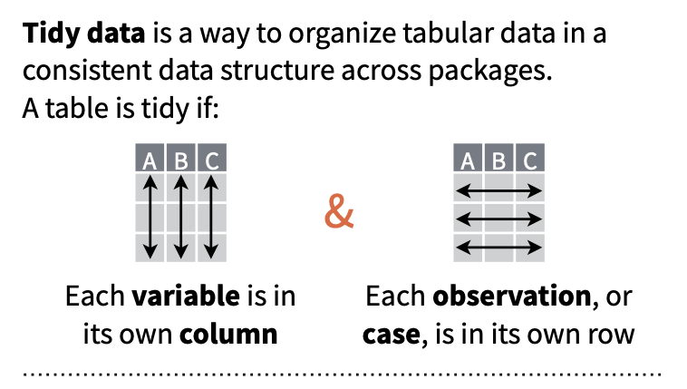
Having data in a “tidy” format is useful for many kinds of analyses (although “tidy” data is not the ONLY useful data format). Often, then, the first manipulations we need to do with data in order to work with it efficiently are to reformat it to make it “tidy”.
There are multiple ways that data can be “non-tidy”, but one common one way is because data is organized in such a way to make data entry in a spreadsheet easier. For example, consider the following table of data representing body weight in grams for three individual titi monkeys, a species of South American primate, collected in each of two years:
Individual
Year_1
Year_2
Lily
580
600
Leia
550
575
Loki
600
620
This data is easy to ENTER, but it is non-tidy… Why? Because the latter two columns actually represent a combinations of two variables (“Year” and “Weight”) that pertain to a given individual. Each row thus represents two observations.
Below is the same data in tidy format, where each row represents a single observation:
Individual
Year
Weight
Lily
Year_1
580
Lily
Year_2
600
Leia
Year_1
550
Leia
Year_2
575
Loki
Year_1
600
Loki
Year_2
620
We can convert data from the former format to the latter using the function pivot_longer(), where the first argument is the tabular data of interest, the next argument is a vector of columns to collect data from, the names_to= argument is the name we will assign to a new variable that indicates from which column values are being collected from in the non-tidy dataset, and the final argument, values_to=, is the name for the new variable into which we are collecting values. This process has the effect, often, of making “wide” tables narrower and longer, thus is sometime referred to as converting data to “long” format, thus the name for the function, pivot_longer(). Note that this function is essentially an update of an older {tidyr} function, gather(), which had a less intuitive name and set of argument names.
d <-data.frame("Individual"=c("Lily", "Leia", "Loki"),"Year_1"=c(580, 550, 600),"Year_2"=c(600, 575, 620) )d
Alternatively, sometimes we will have data that is non-tidy because variables for the same observation are presented in different rows. Consider the following example of “non-tidy” data:
Species
Variable
Value
Orangutans
Body Size (kg)
37
Orangutans
Brain Size (cc)
340
Chimpanzees
Body Size (kg)
38
Chimpanzees
Brain Size (cc)
350
Gorillas
Body Size (kg)
80
Gorillas
Brain Size (cc)
470
The same data could be represented in “tidy” format as:
Species
Body Size (kg)
Brain Size (cc)
Orangutans
37
340
Chimpanzees
38
350
Gorillas
80
470
The pivot_wider() function lets us easily reformat. Here, names_from= is the column containing the different variables, and values_from= is the column containing the measured values of those variables. Note that this function is essentially an update of an older {tidyr} function, spread().
For the remainder of this module, all of the example datasets will comprise data already in the “tidy” format.
9.5 Exploring Single Variables
Variable Summaries
The summary() function from {base} R provides a quick overview of each variable in a data frame. For numeric variables, this includes the five-number summary and the mean, as well as a count of NA (missing values). For factors, it includes a count of each factor.
CHALLENGE
Load the “Country-Data-2016” dataset into a data frame variable, d, and summarize the variables in that data frame. You can load the file any way you want, e.g., load from a local file or access the data straight from GitHub, as in the code below.
# using {base} Rf <-curl("https://raw.githubusercontent.com/difiore/ada-datasets/main/Country-Data-2016.csv")d <-read.csv(f, header =TRUE, sep =",", stringsAsFactors =FALSE)d <-as_tibble(d) # I like tibbles!head(d)
## # A tibble: 10 × 17
## country population area govt_form birthrate deathrate life_expect mammals
## <chr> <dbl> <dbl> <chr> <dbl> <dbl> <dbl> <dbl>
## 1 Macau 592731 28 special … 8.9 4.2 84.5 0
## 2 Monaco 30535 2 constitu… 6.7 9.2 89.5 3
## 3 Holy See… 842 0.1 monarchy NA NA NA 1
## 4 Singapore 5674472 697 republic 8.3 3.4 84.7 13
## 5 Hong Kong 7141106 1108 special … 9.2 7.1 82.9 3
## 6 Gibraltar 29258 7 British … 14.1 8.4 79.3 4
## 7 Bahrain 1346613 760 constitu… 13.7 2.7 78.7 3
## 8 Maldives 393253 298 republic 15.8 3.9 75.4 2
## 9 Malta 413965 316 republic 10.2 9.1 80.2 2
## 10 Bermuda 70196 54 British … 11.3 8.2 81.2 4
## # ℹ 9 more variables: birds <dbl>, reptiles <dbl>, amphibians <dbl>,
## # fishes <dbl>, mollucs <dbl>, other_inverts <dbl>, plants <dbl>,
## # fungi_protists <dbl>, density <dbl>
Show Code
d <- d[order(d$density), ]d[1:10, ]
Show Output
## # A tibble: 10 × 17
## country population area govt_form birthrate deathrate life_expect mammals
## <chr> <dbl> <dbl> <chr> <dbl> <dbl> <dbl> <dbl>
## 1 South Ge… 30 3.90e3 British … NA NA NA 3
## 2 Greenland 57733 2.17e6 autonomo… 14.5 8.5 72.1 9
## 3 Falkland… 3361 1.22e4 British … NA NA NA 4
## 4 Pitcairn… 48 4.7 e1 British … NA NA NA 1
## 5 Mongolia 2992908 1.56e6 republic 20.3 6.4 69.3 11
## 6 Western … 570866 2.66e5 autonomo… 30.2 8.3 62.6 10
## 7 French G… 181000 8.35e4 overseas… 0 0 76.1 8
## 8 Namibia 2212307 8.24e5 republic 19.8 13.9 51.6 14
## 9 Australia 22751014 7.74e6 parliame… 12.2 7.1 82.2 63
## 10 Iceland 331918 1.03e5 republic 13.9 6.3 83 6
## # ℹ 9 more variables: birds <dbl>, reptiles <dbl>, amphibians <dbl>,
## # fishes <dbl>, mollucs <dbl>, other_inverts <dbl>, plants <dbl>,
## # fungi_protists <dbl>, density <dbl>
Use subsetting or filtering to extract data from the 20 largest countries into a new variable, s. What are the median area and population size of these countries?
Show Code
s <- d[order(-d$population), ]s <- s[1:20, ]med_area <-median(s$area, na.rm =TRUE)med_area
Extract data from all countries beginning with the letters “A” through “F”. What are the mean area and population size of these countries?
NOTE: Single bracket notation subsetting is used here to return the rows of the d data frame where the country name (d$country) begins with the capital letters “A” through “F”. The grep() function is a pattern recognition function that uses a regular expression to pull out the country names of interest.
Show Code
s <- d[grep(pattern ="^[A-F]", d$country), ]summary(s)
Show Output
## country population area govt_form
## Length:78 Min. :5.960e+02 Min. : 14 Length:78
## Class :character 1st Qu.:2.991e+05 1st Qu.: 4066 Class :character
## Mode :character Median :4.785e+06 Median : 51148 Mode :character
## Mean :3.507e+07 Mean : 918248
## 3rd Qu.:1.469e+07 3rd Qu.: 466498
## Max. :1.367e+09 Max. :14000000
## NA's :4
## birthrate deathrate life_expect mammals
## Min. : 0.00 Min. : 0.000 Min. :49.80 Min. : 0.0
## 1st Qu.:11.65 1st Qu.: 5.850 1st Qu.:68.75 1st Qu.: 3.0
## Median :15.90 Median : 7.700 Median :75.50 Median : 7.0
## Mean :18.77 Mean : 7.861 Mean :72.25 Mean :13.4
## 3rd Qu.:23.30 3rd Qu.: 9.500 3rd Qu.:78.40 3rd Qu.:14.0
## Max. :42.00 Max. :14.400 Max. :82.70 Max. :81.0
## NA's :7 NA's :7 NA's :7
## birds reptiles amphibians fishes
## Min. : 0.00 Min. : 0.000 Min. : 0.00 Min. : 0.00
## 1st Qu.: 6.00 1st Qu.: 2.000 1st Qu.: 0.00 1st Qu.: 10.00
## Median : 11.00 Median : 5.000 Median : 0.00 Median : 24.50
## Mean : 18.62 Mean : 7.397 Mean : 11.86 Mean : 29.54
## 3rd Qu.: 18.00 3rd Qu.: 8.000 3rd Qu.: 3.00 3rd Qu.: 41.50
## Max. :165.00 Max. :43.000 Max. :215.00 Max. :133.00
##
## mollucs other_inverts plants fungi_protists
## Min. : 0.00 Min. : 0.00 Min. : 0.00 Min. :0.0000
## 1st Qu.: 0.00 1st Qu.: 4.00 1st Qu.: 2.25 1st Qu.:0.0000
## Median : 1.00 Median : 11.00 Median : 10.00 Median :0.0000
## Mean : 10.17 Mean : 23.63 Mean : 70.64 Mean :0.6026
## 3rd Qu.: 5.00 3rd Qu.: 25.25 3rd Qu.: 41.75 3rd Qu.:0.0000
## Max. :174.00 Max. :340.00 Max. :1856.00 Max. :8.0000
##
## density
## Min. : 0.2761
## 1st Qu.: 24.5932
## Median : 75.0297
## Mean : 162.4785
## 3rd Qu.: 140.7140
## Max. :1771.8592
## NA's :4
Doing the same thing with {dplyr} verbs (see Module 10) is easier…
Show Code
s <-filter(d, grepl(pattern ="^[A-F]", country))summary(s)
Show Output
## country population area govt_form
## Length:78 Min. :5.960e+02 Min. : 14 Length:78
## Class :character 1st Qu.:2.991e+05 1st Qu.: 4066 Class :character
## Mode :character Median :4.785e+06 Median : 51148 Mode :character
## Mean :3.507e+07 Mean : 918248
## 3rd Qu.:1.469e+07 3rd Qu.: 466498
## Max. :1.367e+09 Max. :14000000
## NA's :4
## birthrate deathrate life_expect mammals
## Min. : 0.00 Min. : 0.000 Min. :49.80 Min. : 0.0
## 1st Qu.:11.65 1st Qu.: 5.850 1st Qu.:68.75 1st Qu.: 3.0
## Median :15.90 Median : 7.700 Median :75.50 Median : 7.0
## Mean :18.77 Mean : 7.861 Mean :72.25 Mean :13.4
## 3rd Qu.:23.30 3rd Qu.: 9.500 3rd Qu.:78.40 3rd Qu.:14.0
## Max. :42.00 Max. :14.400 Max. :82.70 Max. :81.0
## NA's :7 NA's :7 NA's :7
## birds reptiles amphibians fishes
## Min. : 0.00 Min. : 0.000 Min. : 0.00 Min. : 0.00
## 1st Qu.: 6.00 1st Qu.: 2.000 1st Qu.: 0.00 1st Qu.: 10.00
## Median : 11.00 Median : 5.000 Median : 0.00 Median : 24.50
## Mean : 18.62 Mean : 7.397 Mean : 11.86 Mean : 29.54
## 3rd Qu.: 18.00 3rd Qu.: 8.000 3rd Qu.: 3.00 3rd Qu.: 41.50
## Max. :165.00 Max. :43.000 Max. :215.00 Max. :133.00
##
## mollucs other_inverts plants fungi_protists
## Min. : 0.00 Min. : 0.00 Min. : 0.00 Min. :0.0000
## 1st Qu.: 0.00 1st Qu.: 4.00 1st Qu.: 2.25 1st Qu.:0.0000
## Median : 1.00 Median : 11.00 Median : 10.00 Median :0.0000
## Mean : 10.17 Mean : 23.63 Mean : 70.64 Mean :0.6026
## 3rd Qu.: 5.00 3rd Qu.: 25.25 3rd Qu.: 41.75 3rd Qu.:0.0000
## Max. :174.00 Max. :340.00 Max. :1856.00 Max. :8.0000
##
## density
## Min. : 0.2761
## 1st Qu.: 24.5932
## Median : 75.0297
## Mean : 162.4785
## 3rd Qu.: 140.7140
## Max. :1771.8592
## NA's :4
NOTE: Here, we use grepl() instead of grep() because we want to return a logical vector for all of the elements of “country” to filter() on the basis of. grep() returns a vector of index positions.
Or, instead of summary(), we can use mean() with the na.rm=TRUE argument…
Show Code
mean(s$population, na.rm =TRUE)
Show Output
## [1] 35065172
Show Code
mean(s$area, na.rm =TRUE)
Show Output
## [1] 918247.7
There are a number of other packages and associated functions we might also use to generate nice summaries of our data.
For example, with the skim() function from {skimr}, you can get for numeric variables a count of observations, the number of missing observations, the mean and standard deviation, and the five-number summary. The select(), kable() and kable_styling() functions will format the output nicely!
NOTE: The following code block chains together a set of data wrangling commands using the native pipe operator (|>), which we have not covered yet, but is discussed in detail in Module 10.
library(skimr)library(kableExtra)
s <-skim(d) # the main `skimr()` functions |>filter(skim_type =="numeric") |>rename(variable = skim_variable, missing = n_missing, mean = numeric.mean,sd = numeric.sd, min = numeric.p0, p25 = numeric.p25, median = numeric.p50,p75 = numeric.p75, max = numeric.p100, hist = numeric.hist ) |>select(variable, missing, mean, sd, min, median, max, hist) |># drop p25 and p75 for purposes of displaykable() |>kable_styling(font_size =10, full_width =FALSE)
variable
missing
mean
sd
min
median
max
hist
population
6
2.998647e+07
1.241345e+08
30.0000000
4.911766e+06
1.367485e+09
▇▁▁▁▁
area
1
6.109518e+05
1.927077e+06
0.1000000
6.970000e+04
1.709824e+07
▇▁▁▁▁
birthrate
17
1.894892e+01
9.925912e+00
0.0000000
1.640000e+01
4.550000e+01
▂▇▅▂▁
deathrate
17
7.610390e+00
3.135197e+00
0.0000000
7.400000e+00
1.490000e+01
▁▅▇▃▂
life_expect
19
7.219083e+01
8.587024e+00
49.8000000
7.470000e+01
8.950000e+01
▂▂▃▇▂
mammals
3
1.385306e+01
2.058178e+01
0.0000000
8.000000e+00
1.880000e+02
▇▁▁▁▁
birds
3
1.781633e+01
2.213342e+01
0.0000000
1.200000e+01
1.650000e+02
▇▁▁▁▁
reptiles
3
8.330612e+00
1.408903e+01
0.0000000
5.000000e+00
1.390000e+02
▇▁▁▁▁
amphibians
3
9.848980e+00
2.869408e+01
0.0000000
0.000000e+00
2.150000e+02
▇▁▁▁▁
fishes
3
3.283673e+01
3.552576e+01
0.0000000
2.500000e+01
2.490000e+02
▇▂▁▁▁
mollucs
3
9.620408e+00
2.734627e+01
0.0000000
1.000000e+00
3.010000e+02
▇▁▁▁▁
other_inverts
3
3.256735e+01
5.362966e+01
0.0000000
1.100000e+01
3.400000e+02
▇▁▁▁▁
plants
3
6.077551e+01
1.618624e+02
0.0000000
1.000000e+01
1.856000e+03
▇▁▁▁▁
fungi_protists
3
6.081633e-01
1.847000e+00
0.0000000
0.000000e+00
1.200000e+01
▇▁▁▁▁
density
6
4.230267e+02
1.882632e+03
0.0076864
8.389234e+01
2.116896e+04
▇▁▁▁▁
detach(package:kableExtra)detach(package:skimr)
With descr(), dfSummary(), and view() from the {summarytools} package, you can also return nicely formatted tables of summary statistics. Note that the output of the code below is not shown.
CAUTION: Q1 and Q3 (the equivalent of “numeric.p25” and “numeric.p75”) are calculated slightly differently for descr() and dfSummary() than for summary() and skim()!
With makeDataReport() from the {dataMaid} package, you can generate a nicely formated report that gets written out to a location of your choice. Again, the output of this code is not shown as it generates a report in an external file.
library(dataMaid)# this code below produces a formated report, with the type of report# specified by `output=`makeDataReport(d,output ="html",file ="~/Desktop/dataMaid-output.Rmd",replace =TRUE)detach(package:dataMaid)
Additionally, the packages {psych}, {pastecs}, and {Hmisc} also all contain functions for producing variable summaries:
psych::describe(d)
pastecs::stat.desc(d)
Hmisc::describe(d)
Boxplots, Barplots, and Dotcharts
The boxplot() function from {base} R provides a box-and-whiskers visual representation of the five-number summary, sometimes noting outliers that go beyond the bulk of the data. The function balks if you pass it nonnumeric data, so you will want to reference columns of interest specifically using either double bracket notation or the $ operator.
NOTE: Actually, it is technically not true that boxplot() always shows you the five-number summary. One of the default arguments for boxplot() includes range=1.5, which means that the “whiskers” of the boxplot extend to 1.5 times the interquartile range, and then values more extreme than that are indicated as single points. If range=0, then, the “whiskers” extend to the minimum and maximum values of the data.
The barplot() function is also useful taking a quick look at crude data, with bar height proportional to the value of the variable. The function dotchart() provides a similar graphical summary.
CHALLENGE
Make boxplots, barplots, and dotcharts of the raw population and area data, then log() transform the variables and repeat the boxplots.
NOTE: The par() command in the code below lets you set up a grid of panels in which to plot. Here, we set up a 1 row x 2 column grid.
As an alternative for plotting, we can use the “grammar of graphics” {ggplot2} package. In the code below, we first use tidyr::pivot_longer() to convert our data from wide to long format… this is so we can then use facet.grid().
# uncomment this to look at a different set of variables# d_long <- pivot_longer(d, c("log_population","log_area"),# names_to="Variable", values_to="Value")# uncomment this to look at a different set of variables# d_long <- pivot_longer(d, c("mammals","birds","reptiles","fishes"),# names_to="Variable", values_to="Value")d_long <-pivot_longer(d,c("birthrate", "deathrate", "life_expect"),names_to ="Variable",values_to ="Value" )p <-ggplot(data = d_long, aes(x =factor(0), y = Value)) +geom_boxplot(na.rm =TRUE, outlier.shape =NA) +theme(axis.title.x =element_blank(),axis.text.x =element_blank(),axis.ticks.x =element_blank() ) +geom_dotplot(binaxis ="y",stackdir ="center",stackratio =0.2,alpha =0.3,dotsize =0.5,color =NA,fill ="red",na.rm =TRUE ) +facet_grid(. ~ Variable) +geom_rug(sides ="l")p
The hist() function returns a histogram showing the complete empirical distribution of the data in binned categories, which is useful for checking skewwness of the data, symmetry, multi-modality, etc. Setting the argument freq=FALSE will scale the Y axis to represent the proportion of observations falling into each bin rather than the count.
CHALLENGE
Make histograms of the log() transformed population and area data from the “Country-Data-2016” file. Explore what happens if you set freq=FALSE versus the default of freq=TRUE. Try looking at other variables as well.
Show Code
par(mfrow =c(1, 2)) # sets up two panels side by sideattach(d) # lets us use variable names without specifying the data frame!hist(log(population),freq =FALSE,col ="red",main ="Plot 1",xlab ="log(population size)",ylab ="density",ylim =c(0, 0.2))hist(log(area),freq =FALSE,col ="red",main ="Plot 2",xlab ="log(area)",ylab ="density",ylim =c(0, 0.2))
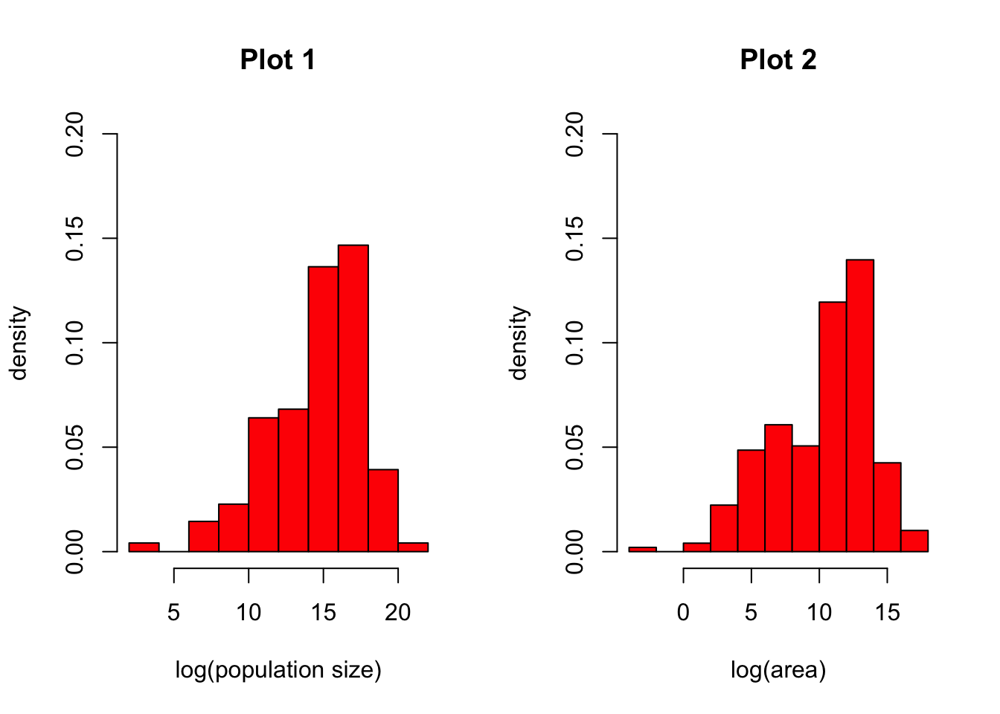
NOTE: You can add lines to your histograms (e.g., to show the mean value for a variable) using the abline() command, with arguments. For example, to show a single vertical line representing the mean log(population size), you would add the argument v=mean(log(area), na.rm=TRUE). We need to set na.rm to be TRUE otherwise the mean() function will not run the way we expect.
The density() function computes a non-parametric estimate of the distribution of a variable, which can be combined with other plots to also yield a graphical view of the distribution of the data. If your data have missing values, then you need to add the argument na.rm=TRUE to the density() function. To superimpose a density() curve on a histogram, you can use the lines(density()) function.
par(mfrow =c(1, 1)) # set up one panel and redraw the log(population) histogramhist(log(population),freq =FALSE,col ="white",main ="Density Plot with Mean",xlab ="log(population size)",ylab ="density",ylim =c(0, 0.2))abline(v =mean(log(population), na.rm =TRUE), col ="blue")lines(density(log(population), na.rm =TRUE), col ="green")
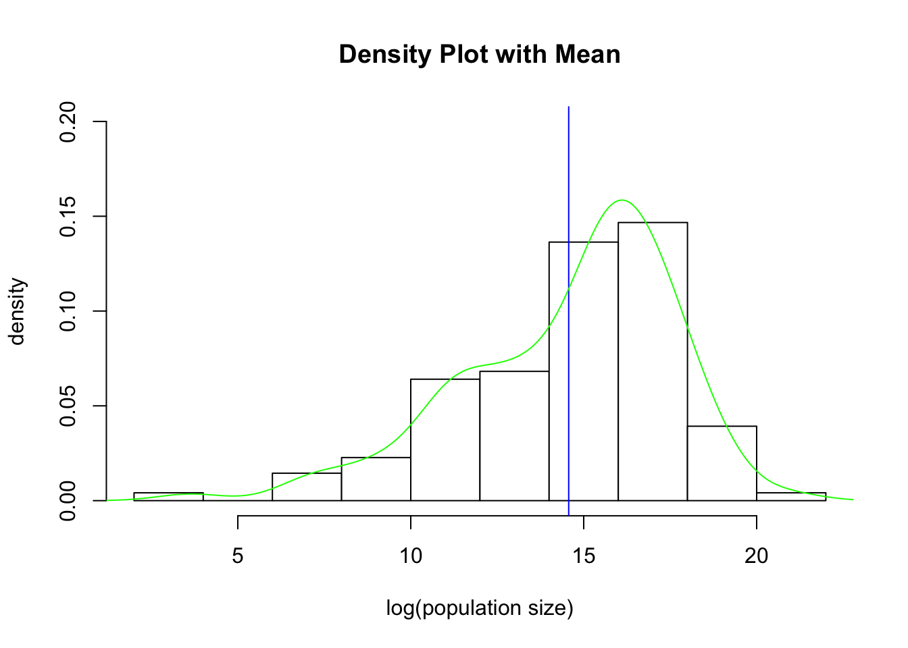
detach(d)
Tables
The table() function can be used to summarize counts and proportions for categorical variables in your dataset.
CHALLENGE
Using the table() function, find what is the most common form of government in the “Country-Data-2016” dataset. How many countries have that form?
HINT: We can combine table() with sort() and the argument decreasing=TRUE to get the desired answered straight away.
Show Code
t <-sort(table(d$govt_form), decreasing =TRUE)t
Show Output
##
## republic constitutional monarchy
## 127 33
## British overseas territory overseas territory of France
## 12 7
## presidential federal republic monarchy
## 7 6
## parliamentary monarchy territory of the United States
## 5 5
## parliamentary democracy territory of Australia
## 4 4
## autonomous territory of the Netherlands federal republic
## 3 3
## islamic republic socialist republic
## 3 3
## absolute monarchy autonomous region of Denmark
## 2 2
## autonomous territory of New Zealand overseas community of France
## 2 2
## parliamentary federal republic special administrative region of China
## 2 2
## territory of Norway autonomous region
## 2 1
## autonomous region of France autonomous region of Morocco
## 1 1
## federation foreign-administrated territory
## 1 1
## islamic-socialist peoples republic parliamentary republic
## 1 1
## peoples republic territory of France
## 1 1
## territory of New Zealand territory of the Netherlands
## 1 1
Doing the same thing with {dplyr} verbs (see Module 10) provides nicer output…
Show Code
t <-group_by(d, govt_form) |>summarize(count =n()) |>arrange(desc(count))t
Show Output
## # A tibble: 33 × 2
## govt_form count
## <chr> <int>
## 1 republic 127
## 2 constitutional monarchy 33
## 3 British overseas territory 12
## 4 overseas territory of France 7
## 5 presidential federal republic 7
## 6 monarchy 6
## 7 parliamentary monarchy 5
## 8 territory of the United States 5
## 9 parliamentary democracy 4
## 10 territory of Australia 4
## # ℹ 23 more rows
9.6 Exploring Multiple Variables
Plotting Several Variables
Multiple boxplots or histograms can be laid out side-by-side or overlaid.
CHALLENGE
Read in the dataset “KamilarAndCooperData”, which contains a host of summary information about 213 primate species.
Spend some time exploring the data on your own and then make boxplots of log(female body mass) ~ family. Try doing this with {base} graphics and then look at how we might do in in {ggplot2}, which provides a standard “grammar of graphics” (see the {ggplot2} documentation)
Show Code
f <-"https://raw.githubusercontent.com/difiore/ada-datasets/main/KamilarAndCooperData.csv"d <-read_csv(f, col_names =TRUE)head(d)
We can also do quick summaries of and visualizations of data distributions for multiple variables at the same time using the {skimr} and {kableExtra} packages.
library(skimr)library(kableExtra)
Show Code
s <-skim(d) # formats results to a wide table# here we make use of the `|>` operator and {dplyr} verbs... see belows |>filter(skim_variable =="Scientific_Name"| skim_type =="numeric") |>rename(variable = skim_variable, missing = n_missing, mean = numeric.mean,sd = numeric.sd, min = numeric.p0, p25 = numeric.p25, median = numeric.p50,p75 = numeric.p75, max = numeric.p100, hist = numeric.hist ) |>select(variable, missing, mean, sd, min, median, max, hist) |># drop p25 and p75 for purposes of displaykable() |>kable_styling(font_size =10, full_width =FALSE)
variable
missing
mean
sd
min
median
max
hist
Scientific_Name
0
NA
NA
NA
NA
NA
NA
Brain_Size_Species_Mean
42
68.109649
7.768403e+01
1.630
61.45000
491.2700
▇▂▁▁▁
Brain_Size_Female_Mean
48
65.235879
7.371151e+01
1.660
57.20000
480.1500
▇▂▁▁▁
Body_mass_male_mean
18
8111.800513
1.920858e+04
31.000
4290.00000
170400.0000
▇▁▁▁▁
Body_mass_female_mean
18
5396.473846
1.008896e+04
30.000
3039.00000
97500.0000
▇▁▁▁▁
Mass_Dimorphism
18
1.246005
3.212141e-01
0.841
1.10900
2.6880
▇▃▂▁▁
MeanGroupSize
60
15.055065
1.759245e+01
1.000
7.80000
90.0000
▇▂▁▁▁
AdultMales
68
2.515621
2.373255e+00
0.900
1.50000
16.0000
▇▁▁▁▁
AdultFemale
68
5.048655
5.428615e+00
1.000
2.90000
25.2000
▇▂▁▁▁
AdultSexRatio
84
2.304729
2.192575e+00
0.500
1.45000
15.6000
▇▁▁▁▁
InterbirthInterval_d
103
572.058546
3.549477e+02
144.470
476.93000
2007.5000
▇▅▁▁▁
Gestation
75
163.465362
3.740063e+01
59.990
165.04000
256.0000
▁▃▇▃▂
WeaningAge_d
95
310.042881
2.546776e+02
40.000
237.73500
1260.8100
▇▅▂▁▁
MaxLongevity_m
66
327.331701
1.259496e+02
103.000
303.60000
720.0000
▅▇▆▂▁
LitterSz
47
1.180542
3.601098e-01
0.990
1.01000
2.5200
▇▁▁▁▁
GR_MidRangeLat_dd
38
-1.796457
1.362270e+01
-24.500
-0.76000
35.8800
▆▆▇▂▁
Precip_Mean_mm
38
1543.134286
5.158597e+02
419.000
1541.90000
2794.3000
▂▅▇▅▂
Temp_Mean_degC
38
23.132000
3.405405e+00
2.600
24.30000
27.4000
▁▁▁▂▇
AET_Mean_mm
38
1253.112000
2.635696e+02
453.100
1291.10000
1828.3000
▁▃▆▇▂
PET_Mean_mm
38
1553.158857
1.567096e+02
842.500
1566.90000
1927.3000
▁▁▂▇▂
HomeRange_km2
65
1.937905
5.210604e+00
0.002
0.27500
28.2400
▇▁▁▁▁
DayLength_km
104
1.551449
1.439277e+00
0.250
1.21200
11.0000
▇▁▁▁▁
Territoriality
109
2.228885
2.201259e+00
0.225
1.59235
15.5976
▇▁▁▁▁
Fruit
98
47.736956
2.408200e+01
1.000
48.00000
97.0000
▅▇▇▇▃
Canine_Dimorphism
92
1.617438
6.722173e-01
0.880
1.56000
5.2630
▇▃▁▁▁
Feed
141
33.075833
1.366899e+01
9.000
33.30000
63.9000
▇▇▇▇▂
Move
143
21.668857
1.059124e+01
3.000
21.00000
70.6000
▅▇▂▁▁
Rest
143
34.259571
1.967175e+01
4.000
30.48000
78.5000
▇▇▅▆▂
Social
136
7.368701
5.242077e+00
0.900
5.40000
23.5000
▇▃▃▁▁
detach(package:kableExtra)detach(package:skimr)
As another type of exporatory data visualization involving multiple variables, it is often useful to make boxplots summarizing a numerical variable in relation to a categorical variable.
Plotting using {base} graphics… the ~ operator can be read as “by”.
boxplot(log(d$Body_mass_female_mean) ~ d$Family)
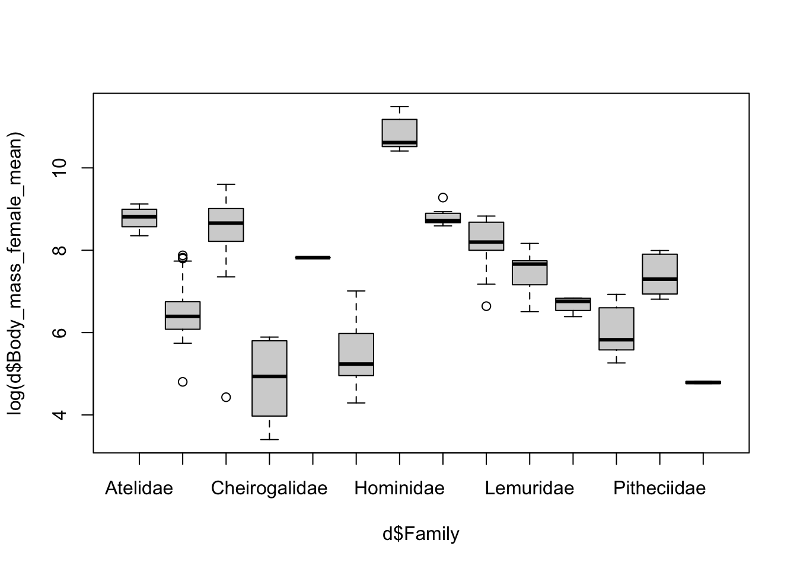
Alternatively, plotting using {ggplot2}…
p <-ggplot(data = d, aes(x = Family, y =log(Body_mass_female_mean)))p <- p +geom_boxplot(na.rm =TRUE)p <- p +theme(axis.text.x =element_text(angle =90))p <- p +ylab("log(Female Body Mass)")p
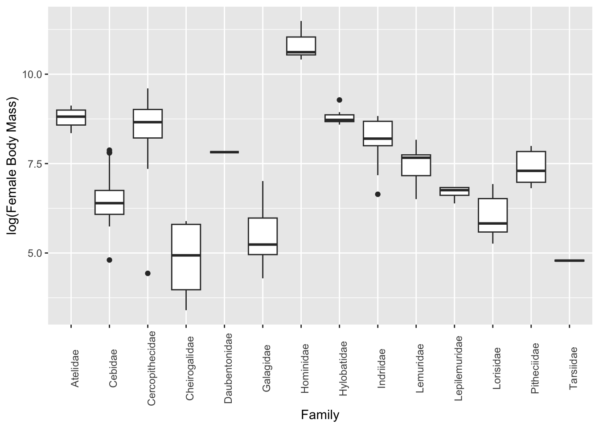
Bivariate Scatterplots
Scatterplots are a natural tool for visualizing two continuous variables and can be made easily with the plot(x=<variable 1>, y=<variable 2>) function in {base} graphics (where <variable 1> and <variable 2> denote the names of the two variables you wish to plot). Transformations of the variables, e.g., log or square root (sqrt()), may be necessary for effective visualization.
CHALLENGE
Again using data from the “KamilarAndCooperData” dataset, plot the relationship between female body size and female brain size. Then, play with log transforming the data and plot again.
Show Code
par(mfrow =c(1, 2)) # sets up two panels side by sideplot(x = d$Body_mass_female_mean, y = d$Brain_Size_Female_Mean)plot(x =log(d$Body_mass_female_mean), y =log(d$Brain_Size_Female_Mean))
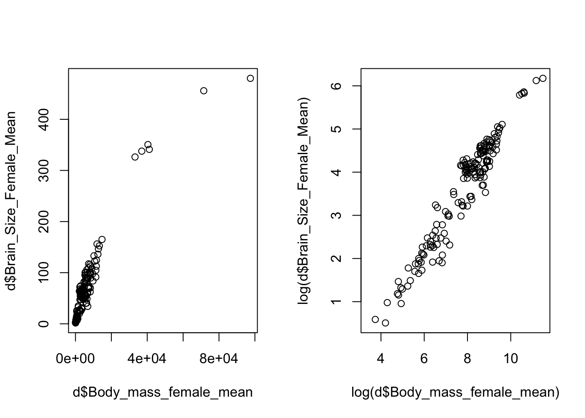
The grammar for {ggplot2} is a bit more complicated… see if you can follow it in the example below.
p <-ggplot(data = d, aes(x =log(Body_mass_female_mean),y =log(Brain_Size_Female_Mean),color =factor(Family))) # first, we build a plot object and color points by Family# then we modify the axis labelsp <- p +xlab("log(Female Body Mass)") +ylab("log(Female Brain Size)")# then we make a scatterplotp <- p +geom_point(na.rm =TRUE)# then we modify the legendp <- p +theme(legend.position ="bottom", legend.title =element_blank())# and, finally, we plot the objectp
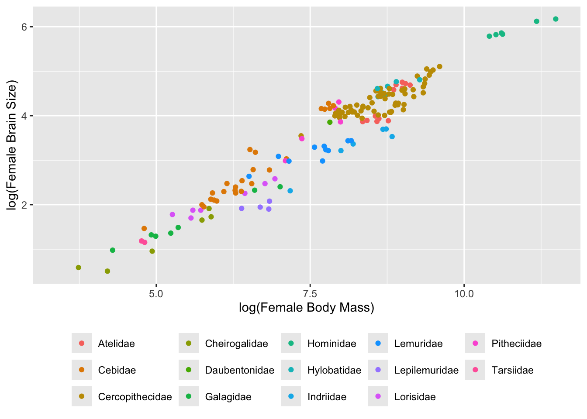
We can use the cool package {ggExtra} to add marginal univariate plots to our bivariate scatterplots, too!
library(ggExtra)ggMarginal(p, type ="densigram") # try with other types, too!
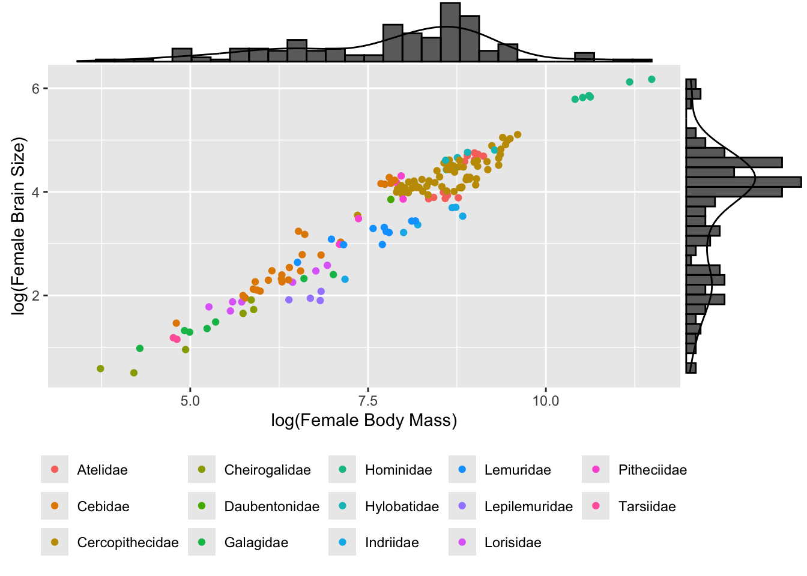
detach(package:ggExtra)
Using {ggplot2}, we can also easily set up a grid for “faceting”” by a grouping variable…
p <- p +facet_wrap(~Family, ncol =4) # wrap data "by" family into 4 columnsp <- p +theme(legend.position ="none")p
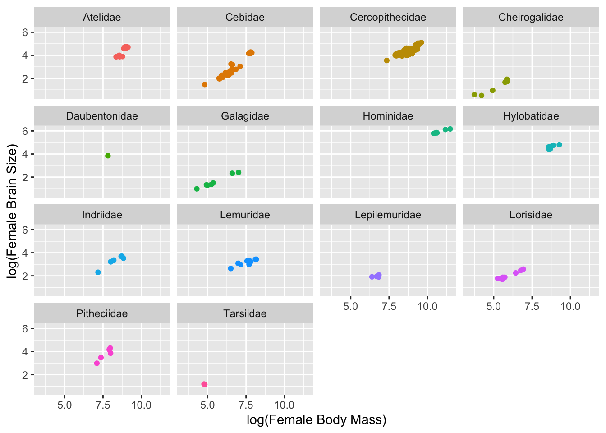
In {ggplot2} can easily add regression lines to our plot. Here, we add a linear model to each facet.
p <- p +geom_smooth(method ="lm", fullrange =FALSE, na.rm =TRUE)p
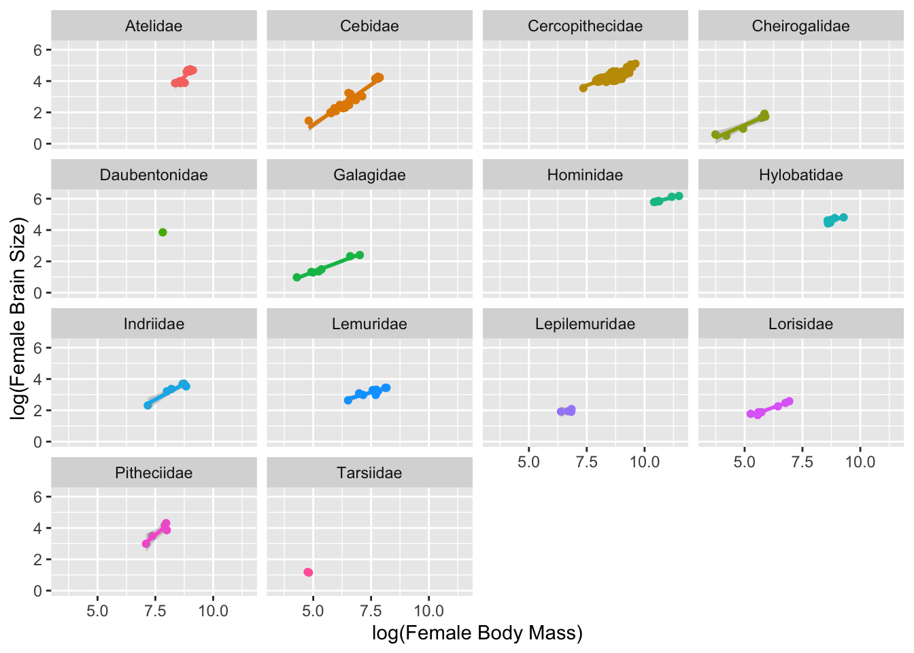
The scatterplot() function from the {car} package also produces nice bivariate plots and includes barplots along the margins.
Build your own bivariate scatterplot of log(MaxLongevity_m) by log(Body_mass_female_mean) using the “KamilarAndCooperData” dataset.
Show Code
p <-ggplot(data = d, aes(x =log(Body_mass_female_mean),y =log(MaxLongevity_m)))p <- p +geom_point(na.rm =TRUE)p <- p +geom_smooth(method ="lm", na.rm =TRUE)p
## `geom_smooth()` using formula = 'y ~ x'
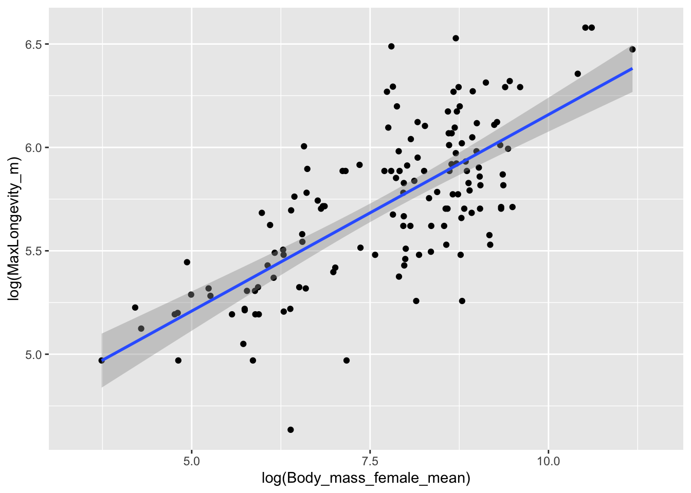
We can also use either the pairs() function from {base} R, the scatterplotMatrix() function from the {car} package, or the pairs.panel() function from the {psych} package to do multiple scatterplots simulaneously. The ggpairs() function from the {GGally} package can also be used, but it is slower.
CHALLENGE
Select the variables Brain_Size_Female_Mean, Body_mass_female_mean, MeanGroupSize, WeaningAge_d, MaxLongevity_m, HomeRange_km2, and DayLength_km from data frame d and plot scatterplots of all pairs of variables.
NOTE: Here we are using the select() function from the {dplyr} package, which we cover in more detail in Module 10.
Show Code
s <-select( d,c("Brain_Size_Female_Mean","Body_mass_female_mean","MeanGroupSize","WeaningAge_d","MaxLongevity_m","HomeRange_km2","DayLength_km" ) )pairs(s[, 1:ncol(s)]) # or
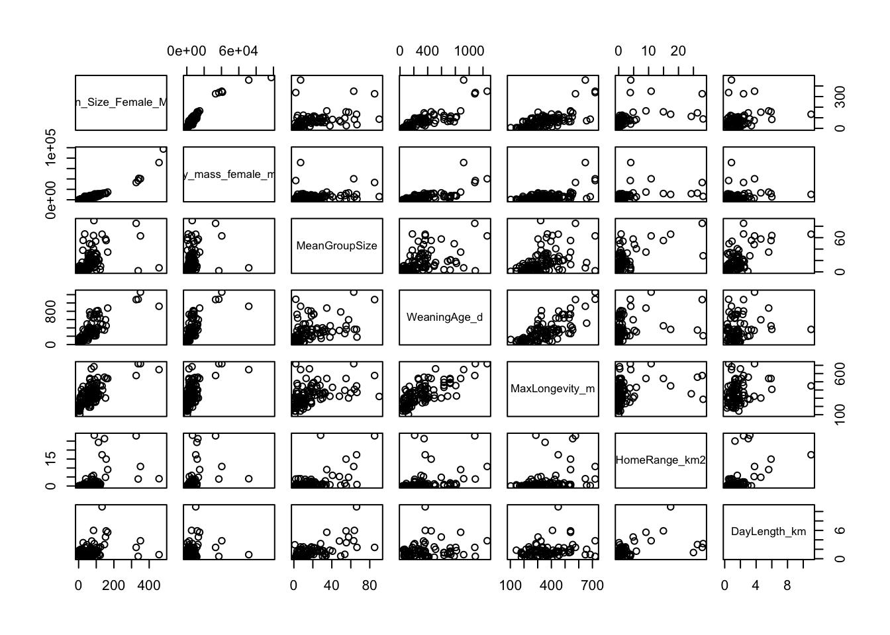
Show Code
pairs(data = s, ~.) # NAs are ignored by default# adding argument `upper.panel=NULL` will suppress plots above the diagonal
The {car} package function scatterplotMatrix() provides a more customizable interface to the pairs() function from {base} R. It includes a neat rug plot for each variable.
The {psych} package also makes it easy to construct a scatterplot matrix with customizable output using the pairs.panel() function. Here, method= specifies the correlation method, density= specifies whether to superimpose a density curve on the histogram, and elipses= specifies whether to show correlation elipses.
The {GGally} package lets us do something similar…
library(GGally)ggpairs(s, columns =1:ncol(s)) # NAs produce a warning
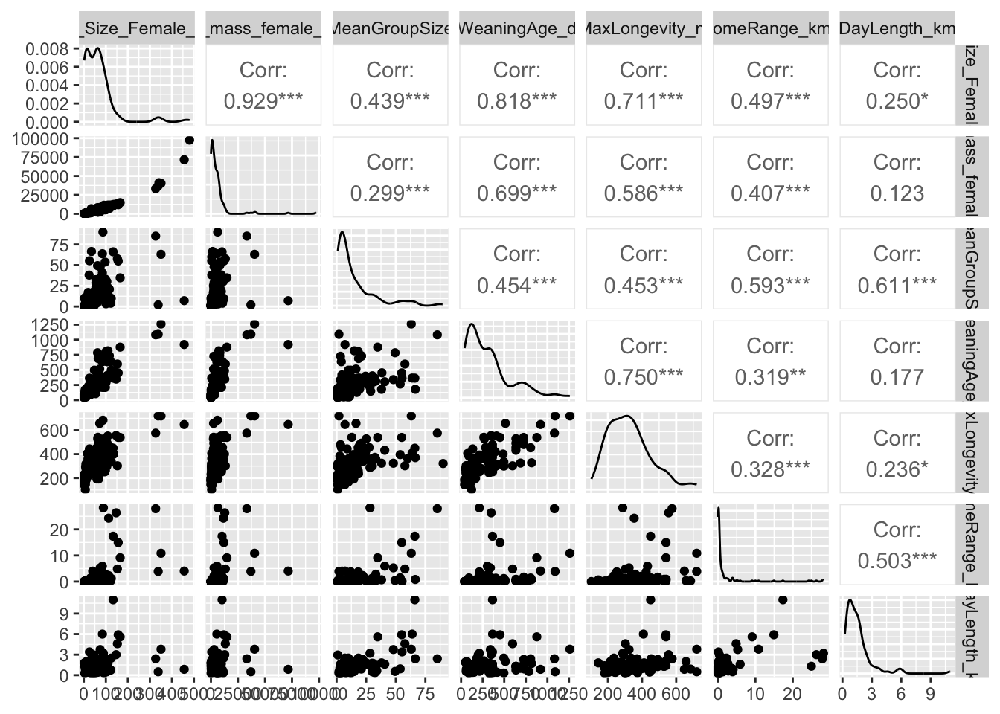
detach(package:GGally)
Finally, we can do a nice correlation plot using the {corrplot} package, where we get a matrix of correlations among variables and a graphical representation of the strength and direction of the bivariate correlation coefficients among them.
library(corrplot)cor <-cor(s, use ="pairwise.complete.obs")corrplot.mixed(cor, lower.col ="black", number.cex = .7)
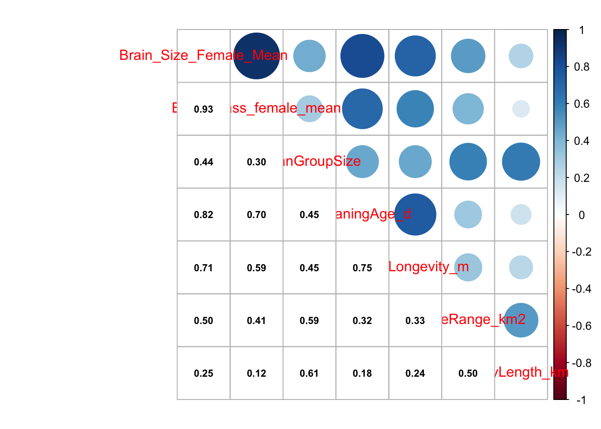
detach(package:corrplot)
9.7 Custom Layouts for Multiple Plots
Above, we saw the typical {base} R method for laying out plots, using the par() command with the mfrow= argument to set up a grid of panels in which to plot to the current graphics output device. There are, however, several easier ways for combining plots into custom layouts. Three alternatives are provided in the {patchwork}, {cowplot}, and {gridExtra} packages. Each starts by generating plot objects, typically using {ggplot2}. First, we create 3 plot objects using the KamilarAndCooper dataset:
Once we have these plot objects, we can arrange them in custom ways using these different packages. Some alternative ways of arranging these three plots in 2 rows, with 2 panels in the top row and 1 in the bottom row, are given below…
The {patchwork} package is perhaps the easiest to use!
To calculate summary statistics for groups of observations in a data frame, there are many different approaches. One is to use the aggregate() function from the {stats} package (a {base} R standard package), which provides a quick way to look at summary statistics for sets of observations, though it requires a bit of clunky code. Here, we apply a particular function (FUN = "mean") to mean female body mass, grouped by Family.
aggregate(d$Body_mass_female_mean ~ d$Family, FUN ="mean", na.rm =TRUE)
Arranging plots with {patchwork}, {cowplot}, and {gridExtra}
Source Code
---output: html_documenteditor_options: chunk_output_type: console---# Exploratory Data Analysis {#module-09}## Objectives> The objective of this module to begin exploring data using the summary functions and graphing abilities of ***R***.## Preliminaries- GO TO: <https://github.com/difiore/ada-datasets>, select the ".csv" version of the "Country-Data-2016" file, then press the "RAW" button, highlight, and copy the text to a text editor and save it locally. Do the same for the "KamilarAndCooperData" file.- Install these packages in ***R***: [{skimr}](https://cran.r-project.org/web/packages/skimr/skimr.pdf), [{summarytools}](https://cran.r-project.org/web/packages/summarytools/summarytools.pdf), [{dataMaid}](https://cran.r-project.org/web/packages/dataMaid/dataMaid.pdf), [{psych}](https://cran.r-project.org/web/packages/psych/psych.pdf), [{pastecs}](https://cran.r-project.org/web/packages/pastecs/pastecs.pdf), [{Hmisc}](https://cran.r-project.org/web/packages/Hmisc/Hmisc.pdf), [{ggExtra}](https://cran.r-project.org/web/packages/ggExtra/ggExtra.pdf), [{car}](https://cran.r-project.org/web/packages/car/car.pdf), [{GGally}](https://cran.r-project.org/web/packages/GGally/GGally.pdf), [{corrplot}](https://cran.r-project.org/web/packages/corrplot/corrplot.pdf), [{patchwork}](https://cran.r-project.org/web/packages/patchwork/patchwork.pdf), [{cowplot}](https://cran.r-project.org/web/packages/cowplot/cowplot.pdf), and [{gridExtra}](https://cran.r-project.org/web/packages/gridExtra/gridExtra.pdf)- Load {curl} and {tidyverse}```{r}#| include: false#| message: falselibrary(curl)library(tidyverse)```## BackstoryExploratory data analysis (EDA) is typically the first step in any kind of data analysis in which you examine your dataset, often using visual methods, to summarize the main characteristics of your variables (central tendency, distributions) and check for various issues that may complicate further analysis (e.g., missing data). The influential statistician, John Tukey, wrote a classic book on the subject, ***Exploratory Data Analysis*** (Addison-Wesley) in 1977, in which he advocated the use of the *five-number summary* to quickly understand the distributions of numeric variables. These include:- the sample minimum (i.e., the value of the smallest observation)- the lower or first quartile- the median (i.e., the middle value in the distribution of observation)- the upper quartile or third quartile- the sample maximum (i.e., the value of the largest observation)***R*** has some very easy to use functions for taking a quick tour of your data. We have seen some of these already (e.g., `head()`, `tail()`, and `str()`), and you should always use these right after loading in a dataset to work with. Also useful are `dim()` to return the number of rows and columns in a data frame, `names()`, `colnames()`, and sometimes `rownames()`.> **NOTE:** You can use the `attach()` function to make variables within data frames accessible in ***R*** with fewer keystrokes. The `attach()` function binds the variables from data frame named as an argument to the local namespace so that as long as the data frame is attached, variables can be called by their names without explicitly referring to the data frame. That is, if you `attach()` a data frame, then you do not need to use the **\$** operator or **double bracket notation** to refer to a particular variable or column vector from your data frame.>> It is important to remember to `detach()` data frames when finished. It is also possible to attach multiple data frames (or the same data frame multiple times), and, if these share variable names, then the more recently attached one will mask the other. Thus, it is best to attach only one data frame at a time. You can also `attach()` and `detach()` packages from the namespace. In general, I do not recommend using `attach()` and `detach()` for dataframes.**EXAMPLE:**```{r}#| warning: false#| message: falsef <-"https://raw.githubusercontent.com/difiore/ada-datasets/main/Country-Data-2016.csv"d <-read_csv(f, col_names =TRUE)names(d)attach(d)mean(life_expect, na.rm =TRUE)detach(d)# mean(life_expect, na.rm=TRUE) # this throws an error!mean(d$life_expect, na.rm =TRUE)```> **NOTE:** The `with()` function accomplishes much the same thing as `attach()` but is self-contained and cleaner, especially for use in functions. If you use `with()`, however, all code to be run should be included as an argument of the function.**EXAMPLE:**```{r}with(d, mean(life_expect, na.rm=TRUE))```## "Tidy" DataThe tabular data we have worked with thus far has all been presented in a format where each row represents a single case or observation or record, and each column contains a different variable that is scored for each of these observations. Data in this format is referred to as "tidy", and the {tidyverse} set of ***R*** packages (which we have used a bit already) provides many tools for manipulating tabular data in this format.```{r}#| echo: false#| out-width: "80%"knitr::include_graphics("img/tidydata.png")```Having data in a "tidy" format is useful for many kinds of analyses (although "tidy" data is not the ONLY useful data format). Often, then, the first manipulations we need to do with data in order to work with it efficiently are to reformat it to make it "tidy".There are multiple ways that data can be "non-tidy", but one common one way is because data is organized in such a way to make data entry in a spreadsheet easier. For example, consider the following table of data representing body weight in grams for three individual titi monkeys, a species of South American primate, collected in each of two years:| Individual | Year_1 | Year_2 ||:-----------|:------:|:------:|| Lily | 580 | 600 || Leia | 550 | 575 || Loki | 600 | 620 |This data is easy to ENTER, but it is non-tidy... Why? Because the latter two columns actually represent a combinations of two variables ("Year" and "Weight") that pertain to a given individual. Each row thus represents two observations.Below is the same data in tidy format, where each row represents a single observation:| Individual | Year | Weight ||:-----------|:------:|:------:|| Lily | Year_1 | 580 || Lily | Year_2 | 600 || Leia | Year_1 | 550 || Leia | Year_2 | 575 || Loki | Year_1 | 600 || Loki | Year_2 | 620 |We can convert data from the former format to the latter using the function `pivot_longer()`, where the first argument is the tabular data of interest, the next argument is a vector of columns to collect data from, the `names_to=` argument is the name we will assign to a new variable that indicates from which column values are being collected from in the non-tidy dataset, and the final argument, `values_to=`, is the name for the new variable into which we are collecting values. This process has the effect, often, of making "wide" tables narrower and longer, thus is sometime referred to as converting data to "long" format, thus the name for the function, `pivot_longer()`. Note that this function is essentially an update of an older {tidyr} function, `gather()`, which had a less intuitive name and set of argument names.```{r}d <-data.frame("Individual"=c("Lily", "Leia", "Loki"),"Year_1"=c(580, 550, 600),"Year_2"=c(600, 575, 620) )dd <-pivot_longer(d, c("Year_1", "Year_2"), names_to ="Year", values_to ="Weight")d```Alternatively, sometimes we will have data that is non-tidy because variables for the same observation are presented in different rows. Consider the following example of "non-tidy" data:| Species | Variable | Value ||:------------|:---------------:|:-----:|| Orangutans | Body Size (kg) | 37 || Orangutans | Brain Size (cc) | 340 || Chimpanzees | Body Size (kg) | 38 || Chimpanzees | Brain Size (cc) | 350 || Gorillas | Body Size (kg) | 80 || Gorillas | Brain Size (cc) | 470 |The same data **could** be represented in "tidy" format as:| Species | Body Size (kg) | Brain Size (cc) ||:------------|:--------------:|:---------------:|| Orangutans | 37 | 340 || Chimpanzees | 38 | 350 || Gorillas | 80 | 470 |The `pivot_wider()` function lets us easily reformat. Here, `names_from=` is the column containing the different variables, and `values_from=` is the column containing the measured values of those variables. Note that this function is essentially an update of an older {tidyr} function, `spread()`.```{r}d <-data.frame("Species"=c("Orangutans","Orangutans","Chimpanzees","Chimpanzees","Gorillas","Gorillas" ),"Variable"=rep(c("Body Size (kg)", "Brain Size (cc)"), 3),"Value"=c(37, 340, 38, 350, 80, 470) )dd <-pivot_wider(d, names_from ="Variable", values_from ="Value")d```This process has the effect, often, of making long and narrow tables wider, thus is sometime referred to as converting data to "wide" format.The image below, pulled from a cheatsheet on [Data Wrangling with {dplyr} and {tidyr}](cheatsheets/data-wrangling.pdf), summarizes the basics of these processes for "reshaping" data.```{r}#| echo: false#| out-width: "90%"knitr::include_graphics("img/reshaping.png")```For the remainder of this module, all of the example datasets will comprise data already in the "tidy" format.## Exploring Single Variables### Variable Summaries {.unnumbered}The `summary()` function from {base} ***R*** provides a quick overview of each variable in a data frame. For **numeric** variables, this includes the five-number summary and the mean, as well as a count of `NA` (missing values). For **factors**, it includes a count of each factor.### CHALLENGE {.unnumbered}- Load the "Country-Data-2016" dataset into a data frame variable, **d**, and summarize the variables in that data frame. You can load the file any way you want, e.g., load from a local file or access the data straight from ***GitHub***, as in the code below.```{r}# using {base} Rf <-curl("https://raw.githubusercontent.com/difiore/ada-datasets/main/Country-Data-2016.csv")d <-read.csv(f, header =TRUE, sep =",", stringsAsFactors =FALSE)d <-as_tibble(d) # I like tibbles!head(d)names(d)# or, using {readr}f <-"https://raw.githubusercontent.com/difiore/ada-datasets/main/Country-Data-2016.csv"d <-read_csv(f, col_names =TRUE)head(d)names(d)```- What are the median area and population size of all countries in the dataset?> **HINT:** There are a couple of ways to do this... try `summary()` and `median()` (for the latter, you'll need to use the `na.rm=TRUE` argument).```{r}#| code-fold: true#| code-summary: "Show Code"#| attr.output: '.details summary="Show Output"'summary(d)median(d$area, na.rm=TRUE)median(d$population, na.rm=TRUE)```- Create a new **density** variable in your data frame which is population / area. What are the 10 most dense countries? The 10 least dense?> **HINT:** Check out the `order()` function.```{r}#| code-fold: true#| code-summary: "Show Code"#| attr.output: '.details summary="Show Output"'d$density <- d$population/d$aread <- d[order(d$density, decreasing =TRUE),] # ord <- d[order(-d$density),]d[1:10,]d <- d[order(d$density),]d[1:10,]```- Use subsetting or filtering to extract data from the 20 largest countries into a new variable, **s**. What are the median area and population size of these countries?```{r}#| code-fold: true#| code-summary: "Show Code"#| attr.output: '.details summary="Show Output"'s <- d[order(-d$population),]s <- s[1:20,]med_area <-median(s$area, na.rm =TRUE)med_areamed_pop <-median(s$population, na.rm =TRUE)med_pop```- Extract data from all countries beginning with the letters "A" through "F". What are the mean area and population size of these countries?> **NOTE:** Single bracket notation subsetting is used here to return the rows of the **d** data frame where the country name (`d$country`) begins with the capital letters "A" through "F". The `grep()` function is a pattern recognition function that uses a **regular expression** to pull out the country names of interest.```{r}#| code-fold: true#| code-summary: "Show Code"#| attr.output: '.details summary="Show Output"'s <- d[grep(pattern ="^[A-F]", d$country),]summary(s)```Doing the same thing with {dplyr} verbs (see [**Module 10**](#module-10)) is easier...```{r}#| code-fold: true#| code-summary: "Show Code"#| attr.output: '.details summary="Show Output"'s <-filter(d, grepl(pattern ="^[A-F]", country))summary(s)```> **NOTE:** Here, we use `grepl()` instead of `grep()` because we want to return a logical vector for all of the elements of "country" to `filter()` on the basis of. `grep()` returns a vector of index positions.Or, instead of `summary()`, we can use `mean()` with the `na.rm=TRUE` argument...```{r}#| code-fold: true#| code-summary: "Show Code"#| attr.output: '.details summary="Show Output"'mean(s$population, na.rm =TRUE)mean(s$area, na.rm =TRUE)```There are a number of other packages and associated functions we might also use to generate nice summaries of our data.For example, with the `skim()` function from {skimr}, you can get for numeric variables a count of observations, the number of missing observations, the mean and standard deviation, and the five-number summary. The `select()`, `kable()` and `kable_styling()` functions will format the output nicely!> **NOTE:** The following code block chains together a set of data wrangling commands using the native pipe operator (`|>`), which we have not covered yet, but is discussed in detail in [**Module 10**](#module-10).```{r}#| message: falselibrary(skimr)library(kableExtra)``````{r}s <-skim(d) # the main `skimr()` functions |>filter(skim_type =="numeric") |>rename(variable=skim_variable, missing=n_missing, mean=numeric.mean,sd=numeric.sd, min=numeric.p0, p25=numeric.p25, median=numeric.p50,p75=numeric.p75, max=numeric.p100, hist=numeric.hist) |>select(variable, missing, mean, sd, min, median, max, hist) |># drop p25 and p75 for purposes of displaykable() |>kable_styling(font_size =10, full_width =FALSE)``````{r}detach(package:kableExtra)detach(package:skimr)```With `descr()`, `dfSummary()`, and `view()` from the {summarytools} package, you can also return nicely formatted tables of summary statistics. Note that the output of the code below is not shown.> **CAUTION:** Q1 and Q3 (the equivalent of "numeric.p25" and "numeric.p75") are calculated slightly differently for `descr()` and `dfSummary()` than for `summary()` and `skim()`!```{r}#| eval: falselibrary(summarytools)s <-descr(d, style ="rmarkdown", transpose =TRUE)# |> to view() print nicely formatted table to viewers |> summarytools::view()s <-dfSummary(d, style ="grid", plain.ascii =FALSE)s |> summarytools::view()detach(package:summarytools)```With `makeDataReport()` from the {dataMaid} package, you can generate a nicely formated report that gets written out to a location of your choice. Again, the output of this code is not shown as it generates a report in an external file.```{r}#| eval: falselibrary(dataMaid)# this code below produces a formated report, with the type of report# specified by `output=`makeDataReport(d,output ="html",file ="~/Desktop/dataMaid-output.Rmd",replace =TRUE)detach(package:dataMaid)```Additionally, the packages {psych}, {pastecs}, and {Hmisc} also all contain functions for producing variable summaries:`psych::describe(d)``pastecs::stat.desc(d)``Hmisc::describe(d)`### Boxplots, Barplots, and Dotcharts {.unnumbered}The `boxplot()` function from {base} ***R*** provides a box-and-whiskers visual representation of the five-number summary, sometimes noting outliers that go beyond the bulk of the data. The function balks if you pass it nonnumeric data, so you will want to reference columns of interest specifically using either **double bracket notation** or the **\$** operator.> **NOTE:** Actually, it is technically not true that `boxplot()` always shows you the five-number summary. One of the default arguments for `boxplot()` includes `range=1.5`, which means that the "whiskers" of the boxplot extend to 1.5 times the interquartile range, and then values more extreme than that are indicated as single points. If `range=0`, then, the "whiskers" extend to the minimum and maximum values of the data.The `barplot()` function is also useful taking a quick look at crude data, with bar height proportional to the value of the variable. The function `dotchart()` provides a similar graphical summary.### CHALLENGE {.unnumbered}- Make boxplots, barplots, and dotcharts of the raw population and area data, then `log()` transform the variables and repeat the boxplots.> **NOTE:** The `par()` command in the code below lets you set up a grid of panels in which to plot. Here, we set up a 1 row x 2 column grid.```{r}#| code-fold: true#| code-summary: "Show Code"#| attr.output: '.details summary="Show Output"'#| fig-height: 4par(mfrow =c(1, 2))d$log_population <-log(d$population)d$log_area <-log(d$area)boxplot(d$population, ylab ="Population")boxplot(d$area, ylab ="Area")barplot(d$population, xlab ="Case", ylab ="Population")dotchart(d$population, xlab ="Population", ylab ="Case")barplot(d$area, xlab ="Case", ylab ="Area")dotchart(d$area, xlab ="Area", ylab ="Case")boxplot(d$log_population, ylab ="log(Population)")boxplot(d$log_area, ylab ="log(Area)")```### Plotting with {ggplot2} {.unnumbered}As an alternative for plotting, we can use the "grammar of graphics" {ggplot2} package. In the code below, we first use `tidyr::pivot_longer()` to convert our data from wide to long format... this is so we can then use `facet.grid()`.```{r}#| message: false#| warning: false#| fig-height: 4# uncomment this to look at a different set of variables# d_long <- pivot_longer(d, c("log_population","log_area"),# names_to="Variable", values_to="Value")# uncomment this to look at a different set of variables# d_long <- pivot_longer(d, c("mammals","birds","reptiles","fishes"),# names_to="Variable", values_to="Value")d_long <-pivot_longer(d,c("birthrate", "deathrate", "life_expect"),names_to ="Variable",values_to ="Value")p <-ggplot(data = d_long, aes(x =factor(0), y = Value)) +geom_boxplot(na.rm =TRUE, outlier.shape =NA) +theme(axis.title.x =element_blank(),axis.text.x =element_blank(),axis.ticks.x =element_blank() ) +geom_dotplot(binaxis ='y',stackdir ='center',stackratio =0.2,alpha =0.3,dotsize =0.5,color =NA,fill ="red",na.rm =TRUE ) +facet_grid(. ~ Variable) +geom_rug(sides ="l")pp <-ggplot(data = d_long, aes(x =factor(0), y = Value)) +geom_violin(na.rm =TRUE, draw_quantiles =c(0.25, 0.5, 0.75)) +theme(axis.title.x =element_blank(),axis.text.x =element_blank(),axis.ticks.x =element_blank() ) +geom_dotplot(binaxis ='y',stackdir ='center',stackratio =0.2,alpha =0.3,dotsize =0.5,color =NA,fill ="red",na.rm =TRUE ) +facet_grid(. ~ Variable) +geom_rug(sides ="l")p```### Histograms {.unnumbered}The `hist()` function returns a histogram showing the complete empirical distribution of the data in binned categories, which is useful for checking skewwness of the data, symmetry, multi-modality, etc. Setting the argument `freq=FALSE` will scale the Y axis to represent the *proportion* of observations falling into each bin rather than the *count*.### CHALLENGE {.unnumbered}- Make histograms of the `log()` transformed population and area data from the "Country-Data-2016" file. Explore what happens if you set `freq=FALSE` versus the default of `freq=TRUE`. Try looking at other variables as well.```{r}#| message: false#| code-fold: true#| code-summary: "Show Code"#| attr.output: '.details summary="Show Output"'par(mfrow =c(1, 2)) # sets up two panels side by sideattach(d) # lets us use variable names without specifying the data frame!hist(log(population),freq =FALSE,col ="red",main ="Plot 1",xlab ="log(population size)",ylab ="density",ylim =c(0, 0.2))hist(log(area),freq =FALSE,col ="red",main ="Plot 2",xlab ="log(area)",ylab ="density",ylim =c(0, 0.2))```> **NOTE:** You can add lines to your histograms (e.g., to show the mean value for a variable) using the `abline()` command, with arguments. For example, to show a single *vertical* line representing the mean log(population size), you would add the argument `v=mean(log(area), na.rm=TRUE)`. We need to set `na.rm` to be TRUE otherwise the `mean()` function will not run the way we expect.```{r}#| code-fold: true#| code-summary: "Show Code"#| attr.output: '.details summary="Show Output"'hist(log(area),freq =FALSE,col ="red",main ="Plot 2",xlab ="log(area)",ylab ="density",ylim =c(0, 0.2))abline(v =mean(log(area), na.rm =TRUE))```### Density Plots {.unnumbered}The `density()` function computes a non-parametric estimate of the distribution of a variable, which can be combined with other plots to also yield a graphical view of the distribution of the data. If your data have missing values, then you need to add the argument `na.rm=TRUE` to the `density()` function. To superimpose a `density()` curve on a histogram, you can use the `lines(density())` function.```{r}#| message: falsepar(mfrow =c(1, 1)) # set up one panel and redraw the log(population) histogramhist(log(population),freq =FALSE,col ="white",main ="Density Plot with Mean",xlab ="log(population size)",ylab ="density",ylim =c(0, 0.2))abline(v =mean(log(population), na.rm =TRUE), col ="blue")lines(density(log(population), na.rm =TRUE), col ="green")detach(d)```### Tables {.unnumbered}The `table()` function can be used to summarize counts and proportions for categorical variables in your dataset.### CHALLENGE {.unnumbered}- Using the `table()` function, find what is the most common form of government in the "Country-Data-2016" dataset. How many countries have that form?> **HINT:** We can combine `table()` with `sort()` and the argument `decreasing=TRUE` to get the desired answered straight away.```{r}#| code-fold: true#| code-summary: "Show Code"#| attr.output: '.details summary="Show Output"'t <-sort(table(d$govt_form), decreasing=TRUE)t```Doing the same thing with {dplyr} verbs (see [**Module 10**](#module-10)) provides nicer output...```{r}#| code-fold: true#| code-summary: "Show Code"#| attr.output: '.details summary="Show Output"'t <-group_by(d, govt_form) |>summarize(count =n()) |>arrange(desc(count))t```## Exploring Multiple Variables### Plotting Several Variables {.unnumbered}- Multiple boxplots or histograms can be laid out side-by-side or overlaid.### CHALLENGE {.unnumbered}Read in the dataset "KamilarAndCooperData", which contains a host of summary information about 213 primate species.Spend some time exploring the data on your own and then make boxplots of **log(female body mass) \~ family**. Try doing this with {base} graphics and then look at how we might do in in {ggplot2}, which provides a standard "grammar of graphics" (see the [{ggplot2} documentation](http://docs.ggplot2.org/current/))```{r}#| message: false#| code-fold: true#| code-summary: "Show Code"#| attr.output: '.details summary="Show Output"'f <-"https://raw.githubusercontent.com/difiore/ada-datasets/main/KamilarAndCooperData.csv"d <-read_csv(f, col_names =TRUE)head(d)```We can also do quick summaries of and visualizations of data distributions for multiple variables at the same time using the {skimr} and {kableExtra} packages.```{r}#| message: falselibrary(skimr)library(kableExtra)``````{r}#| code-fold: true#| code-summary: "Show Code"#| attr.output: '.details summary="Show Output"'s <-skim(d) # formats results to a wide table# here we make use of the `|>` operator and {dplyr} verbs... see belows |>filter(skim_variable =="Scientific_Name"| skim_type =="numeric") |>rename(variable=skim_variable, missing=n_missing, mean=numeric.mean,sd=numeric.sd, min=numeric.p0, p25=numeric.p25, median=numeric.p50,p75=numeric.p75, max=numeric.p100, hist=numeric.hist) |>select(variable, missing, mean, sd, min, median, max, hist) |># drop p25 and p75 for purposes of displaykable() |>kable_styling(font_size =10, full_width =FALSE)``````{r}#| message: falsedetach(package:kableExtra)detach(package:skimr)```As another type of exporatory data visualization involving multiple variables, it is often useful to make boxplots summarizing a numerical variable in relation to a categorical variable.Plotting using {base} graphics... the `~` operator can be read as "by".```{r}boxplot(log(d$Body_mass_female_mean) ~ d$Family)```Alternatively, plotting using {ggplot2}...```{r}p <-ggplot(data=d, aes(x=Family, y=log(Body_mass_female_mean)))p <- p +geom_boxplot(na.rm=TRUE)p <- p +theme(axis.text.x=element_text(angle=90))p <- p +ylab("log(Female Body Mass)")p```### Bivariate Scatterplots {.unnumbered}Scatterplots are a natural tool for visualizing two continuous variables and can be made easily with the `plot(x=<variable 1>, y=<variable 2>)` function in {base} graphics (where `<variable 1>` and `<variable 2>` denote the names of the two variables you wish to plot). Transformations of the variables, e.g., `log` or square root (`sqrt()`), may be necessary for effective visualization.### CHALLENGE {.unnumbered}- Again using data from the "KamilarAndCooperData" dataset, plot the relationship between female body size and female brain size. Then, play with log transforming the data and plot again.```{r}#| code-fold: true#| code-summary: "Show Code"#| attr.output: '.details summary="Show Output"'par(mfrow=c(1,2)) # sets up two panels side by sideplot(x = d$Body_mass_female_mean, y = d$Brain_Size_Female_Mean)plot(x =log(d$Body_mass_female_mean), y =log(d$Brain_Size_Female_Mean))```The grammar for {ggplot2} is a bit more complicated... see if you can follow it in the example below.```{r}p <-ggplot(data=d, aes(x=log(Body_mass_female_mean),y=log(Brain_Size_Female_Mean),color =factor(Family) )) # first, we build a plot object and color points by Family# then we modify the axis labelsp <- p +xlab("log(Female Body Mass)") +ylab("log(Female Brain Size)")# then we make a scatterplotp <- p +geom_point(na.rm=TRUE)# then we modify the legendp <- p +theme(legend.position="bottom", legend.title=element_blank())# and, finally, we plot the objectp```We can use the cool package {ggExtra} to add marginal univariate plots to our bivariate scatterplots, too!```{r}library(ggExtra)ggMarginal(p, type ="densigram") # try with other types, too!detach(package:ggExtra)```Using {ggplot2}, we can also easily set up a grid for "faceting"" by a grouping variable...```{r}p <- p +facet_wrap(~ Family, ncol=4) # wrap data "by" family into 4 columnsp <- p +theme(legend.position="none")p```In {ggplot2} can easily add regression lines to our plot. Here, we add a linear model to each facet.```{r}#| warning: false#| message: falsep <- p +geom_smooth(method="lm", fullrange=FALSE, na.rm=TRUE)p```The `scatterplot()` function from the {car} package also produces nice bivariate plots and includes barplots along the margins.```{r}#| message: falselibrary(car)``````{r}scatterplot(data = d,log(Brain_Size_Female_Mean) ~log(Body_mass_female_mean),xlab ="log(Female Body Mass",ylab ="log(Female Brain Size",boxplots ="xy",regLine =list(method = lm,lty =1,lwd =2,col ="red" ))detach(package:car)```### CHALLENGE {.unnumbered}- Build your own bivariate scatterplot of **log(MaxLongevity_m)** by **log(Body_mass_female_mean)** using the "KamilarAndCooperData" dataset.```{r}#| code-fold: true#| code-summary: "Show Code"#| attr.output: '.details summary="Show Output"'p <-ggplot(data=d, aes(x=log(Body_mass_female_mean),y=log(MaxLongevity_m)))p <- p +geom_point(na.rm =TRUE)p <- p +geom_smooth(method="lm", na.rm =TRUE)p```We can also use either the `pairs()` function from {base} ***R***, the `scatterplotMatrix()` function from the {car} package, or the `pairs.panel()` function from the {psych} package to do multiple scatterplots simulaneously. The `ggpairs()` function from the {GGally} package can also be used, but it is slower.### CHALLENGE {.unnumbered}Select the variables **Brain_Size_Female_Mean**, **Body_mass_female_mean**, **MeanGroupSize**, **WeaningAge_d**, **MaxLongevity_m**, **HomeRange_km2**, and **DayLength_km** from data frame **d** and plot scatterplots of all pairs of variables.> **NOTE:** Here we are using the `select()` function from the {dplyr} package, which we cover in more detail in [**Module 10**](#module-10).```{r}#| code-fold: true#| code-summary: "Show Code"#| attr.output: '.details summary="Show Output"'s <-select(d,c("Brain_Size_Female_Mean","Body_mass_female_mean","MeanGroupSize","WeaningAge_d","MaxLongevity_m","HomeRange_km2","DayLength_km" ) )pairs(s[,1:ncol(s)]) # orpairs(data=s, ~.) # NAs are ignored by default# adding argument `upper.panel=NULL` will suppress plots above the diagonal```The {car} package function `scatterplotMatrix()` provides a more customizable interface to the `pairs()` function from {base} ***R***. It includes a neat rug plot for each variable.```{r}#| message: falselibrary(car)``````{r}scatterplotMatrix(s,smooth =TRUE,regLine =list(method = lm, lty =1, lwd =2),ellipse =TRUE,upper.panel =NULL)detach(package:car)```The {psych} package also makes it easy to construct a scatterplot matrix with customizable output using the `pairs.panel()` function. Here, `method=` specifies the correlation method, `density=` specifies whether to superimpose a density curve on the histogram, and `elipses=` specifies whether to show correlation elipses.```{r}#| message: falselibrary(psych)pairs.panels(s[], smooth =FALSE,lm =TRUE,method ="pearson",hist.col ="#00AFBB",density =TRUE,ellipses =TRUE)# NAs are ignored by defaultdetach(package:psych)```The {GGally} package lets us do something similar...```{r}#| warning: false#| message: falselibrary(GGally)ggpairs(s, columns =1:ncol(s)) # NAs produce a warningdetach(package:GGally)```Finally, we can do a nice correlation plot using the {corrplot} package, where we get a matrix of correlations among variables and a graphical representation of the strength and direction of the bivariate correlation coefficients among them.```{r}#| message: falselibrary(corrplot)cor =cor(s, use="pairwise.complete.obs")corrplot.mixed(cor, lower.col ="black", number.cex = .7)detach(package:corrplot)```## Custom Layouts for Multiple PlotsAbove, we saw the typical {base} ***R*** method for laying out plots, using the `par()` command with the `mfrow=` argument to set up a grid of panels in which to plot to the current graphics output device. There are, however, several easier ways for combining plots into custom layouts. Three alternatives are provided in the {patchwork}, {cowplot}, and {gridExtra} packages. Each starts by generating plot objects, typically using {ggplot2}. First, we create 3 plot objects using the KamilarAndCooper dataset:```{r}p1 <-ggplot(data=d, aes(x=log(Body_mass_female_mean), y=log(MaxLongevity_m)))p1 <- p1 +geom_point(na.rm =TRUE)p1 <- p1 +geom_smooth(method="lm", na.rm =TRUE)p1 <- p1 +xlab("log(Female Body Size)") +ylab("log(Lifespan)")p2 <-ggplot(data=d, aes(x=log(Body_mass_male_mean),y=log(MaxLongevity_m)))p2 <- p2 +geom_point(na.rm =TRUE)p2 <- p2 +geom_smooth(method="lm", na.rm =TRUE)p2 <- p2 +xlab("log(Male Body Size)") +ylab("log(Lifespan)")p3 <-ggplot(data=d, aes(x=Family, y=log(Body_mass_female_mean)))p3 <- p3 +geom_boxplot(na.rm=TRUE)p3 <- p3 +theme(axis.text.x=element_text(angle=90))p3 <- p3 +xlab("Family") +ylab("log(Female Body Mass)")```Once we have these plot objects, we can arrange them in custom ways using these different packages. Some alternative ways of arranging these three plots in 2 rows, with 2 panels in the top row and 1 in the bottom row, are given below...The {patchwork} package is perhaps the easiest to use!```{r}#| warning: false#| message: falselibrary(patchwork)(p1 | p2)/p3 +plot_annotation(tag_levels ='A')detach(package:patchwork)```We can also use {cowplot}...```{r}#| warning: false#| message: falselibrary(cowplot)plot_grid(plot_grid( p1, p2,labels =c('A', 'B'),label_size =12,nrow =1 ), p3,labels =c('', 'C'),label_size =12,nrow =2)detach(package:cowplot)```... or {gridExtra}```{r}#| warning: false#| message: falselibrary(gridExtra)grid.arrange(grid.arrange(p1,p2, nrow=1),p3, nrow=2)detach(package:gridExtra)```## Aggregate StatisticsTo calculate summary statistics for *groups* of observations in a data frame, there are many different approaches. One is to use the `aggregate()` function from the {stats} package (a {base} ***R*** standard package), which provides a quick way to look at summary statistics for sets of observations, though it requires a bit of clunky code. Here, we apply a particular function (`FUN = "mean"`) to mean female body mass, grouped by **Family**.```{r}aggregate(d$Body_mass_female_mean~d$Family, FUN ="mean", na.rm =TRUE)```Or, alternatively...```{r}aggregate(x = d["Body_mass_female_mean"], by = d["Family"], FUN ="mean", na.rm =TRUE)``````{r}# | include: falsedetach(package:curl)detach(package:tidyverse)```---## Concept Review {.unnumbered}- Summary statistics: `summary()`, `skim()`- Basic plotting: `boxplot()`, `barplot()`, `histogram()`- Plotting with {ggplot2}: - `ggplot(data = , mapping = aes()) + geom() + theme() + ...`- Summarizing by groups: `aggregrate()`- Arranging plots with {patchwork}, {cowplot}, and {gridExtra}